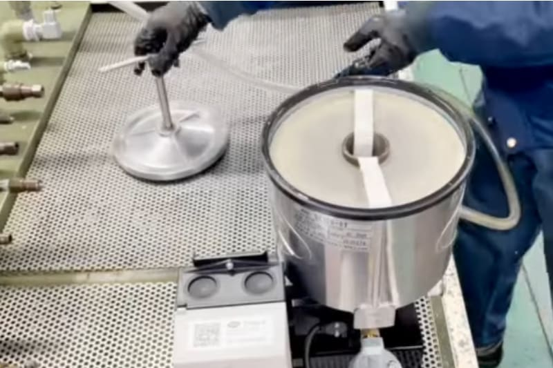

- Home
- Oplossingen
Olie reinigen in plaats van verversen
Vuile olie veroorzaakt de meeste machinestoringen. Triple R reinigt olie in plaats van ze te verversen: één 114 mm dieptefilter haalt vaste deeltjes, varnish en water uit hydraulische olie en smeerolie, en de Quicktoron verwijdert lucht. Zo gaat uw olie jaren langer mee en draaien pompen en kleppen betrouwbaarder.
80% van de machinestoringen begint in de olie.
De meeste schadelijke deeltjes zijn kleiner dan 5 µm: onzichtbaar, en kleiner dan de spleten in pompen en servoventielen.
Vuil dat één pomp per jaar rondpompt
Pomp van 200 l/min, één jaar in bedrijf
Eén filterelement tegen vier soorten vervuiling
De meeste filters stoppen enkel deeltjes. Een Triple R-element werkt in de diepte en houdt ook varnish en water vast.
Vaste deeltjes
Slijtagemetaal, stof en silica slijpen pompen, kleppen en cilinders.
Tot 99% verwijderdVarnish & sludge
Oxidatieresten zetten zich af op kleppen; servo- en proportionele ventielen gaan haperen.
V-element: 1 µm absoluutWater
Water versnelt oxidatie en corrosie. De cellulose in het element absorbeert het.
Tot < 100 ppmLucht & schuim
Luchtbellen veroorzaken cavitatie en lawaai. De Quicktoron ontlucht de olie.
Tot 95% verwijderd114 mm dieptefiltratie in drie stappen
Een Triple R-filterelement is een dieptefilter op basis van cellulose. De olie stroomt langzaam door 114 mm media en wordt per laag fijner gereinigd.
Grove laag
Grote deeltjes blijven bovenaan, zodat de diepere lagen hun capaciteit bewaren voor fijner vuil.
Niet-samengeperste laag
Kleinere deeltjes blijven steken; de cellulosevezels absorberen vrij en geëmulgeerd water.
Samengeperste laag
De fijnste deeltjes en oxidatieresten (varnish, sludge) worden vastgehouden.
Het element vervangt u zonder morsen: de afvalzak zit in de middenbuis. Hoe werkt bypassfiltratie?
De schoonste olie is de olie die u niet vervangt
- Reduce
Olieverbruik tot 90% lager, minder afgewerkte olie.
- Reuse
Dezelfde olie jarenlang in gebruik; sommige klanten al meer dan 20 jaar.
- Recycle
Vacuüm verpakte elementen, vervangen zonder morsen met de afvalzak in de middenbuis.
vermeden per 1.000 l olie die niet ververst wordt (aanname: 1 l olie ≈ 3,0 kg CO₂).
Bereken uw besparing
Bespreek uw installatie met een specialist
Beschrijf uw machines in 2 minuten en ontvang vrijblijvend advies over de juiste filteroplossing.

Maxim Van Uytven
Managing Director
Team Triple R Europe, Aartselaar. Portret volgt na de fotoshoot.